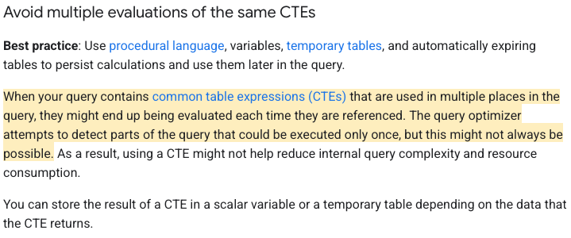

2025-04-22
Recently I ran into an interesting challenge in SQL when working in BigQuery that I was not previously aware of. I was generating a random number in a CTE (common table expression) and I then referenced that CTE multiple time later in the query. I realized that the random number in one CTE reference wasn't matching the random number in the other CTE reference.
After some digging, it turns out that CTEs can be evaluated each time they are referenced. So each time I was referencing the CTE, it was regenerating new random numbers, so I wouldn't be able to successfully join the CTE to itself using the random number.
Here is how Google explains it in their documentation: They say that the query optimizer may attempt to detect parts of the query that could be executed only once, but this might not always be possible.
In order to get around this, we can just use a temp table.